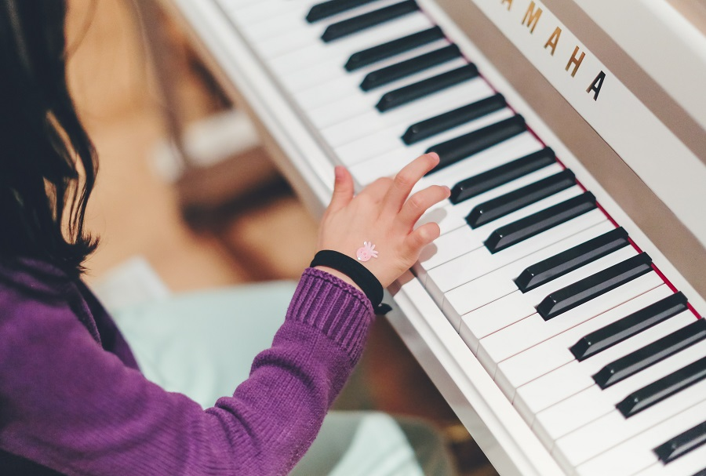
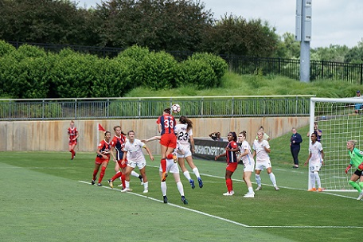
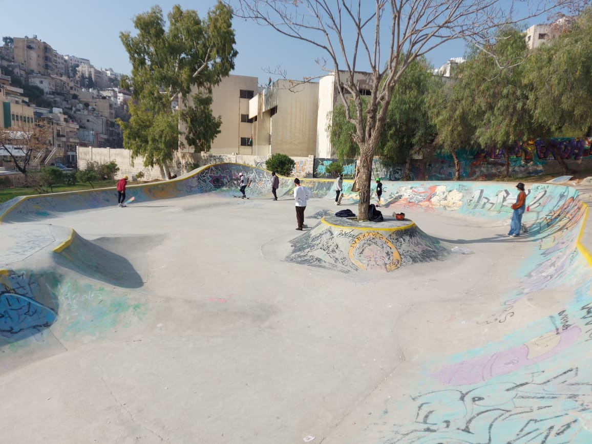

Music and Art: Music Whale Amman

Music Whale:
Address:
Mecca Street Building 169, Floor 1، Amman
Hours of Operation:
Sunday-Saturday: 12-8pm
Phone: 07 9986 0685
Website:www.musicwhaleme.com
Music Whale is a comprehensive Music Talent Center in Amman
specialized in children. Music Group activities in this school include
Bands, Choirs, Music Workshops and Music Ensembles.They offer private
music classes for all Instruments and specialized programs for
specific age groups starting 4 years old. Instruments taught include
among others: piano, drums, violin and guitar. They also offer singing
and vocal training and ballet. Some families consider this the Best
Music Center in Amman
Sports and Exercise: 6 Yards Soccer Academy

6 Yards:
Address:
Muflah 93، شارع مرعي العجارمة، Amman
Hours of Operation:
Sunday-Saturday: 6am-12am
Phone: 07 9666 0022
Website:6-yard.com/
Consired by many Amman’s premier football facilities! 6 Yards has 3
state of the art FIFA-Approved indoor and outdoor pitches ready to be
utilized as part of an entertainment city for the whole family.
Located at the beginning of the airport road, in open air and nature’s
surroundings, away from central Amman’s congestion. They are set up
with secure gates and 24/7 surveillance cameras so families can drop
off kids with a peace of mind. They offer football, paintball, laser
tag and a game center cafe where the whole family can relax and enjoy.
Outdoor Family Activities: 7 Hills Skatepark

7 Hills:
Address:
Jabal،Amman
Hours of Operation:
24 hours a day
Email:info@7hillspark.com
Website:www.7hillspark.com/
7Hills provides a secure space for people from all walks of life and
offers a tool - skateboarding, to defeat gender, racial, religious or
cultural inequalities. 7Hills creates an open, democratic environment
for everyone in the city of Amman struggling with social barriers. It
aims to give all children, youth and parents a safe, public space to
skateboard, socialize and unwind. Through the joyous outlet of
skateboarding, 7Hills bridges the gap between different cultures,
social and racial backgrounds, religions, gender and age.Offers free
and private (paid) classes for anyone.